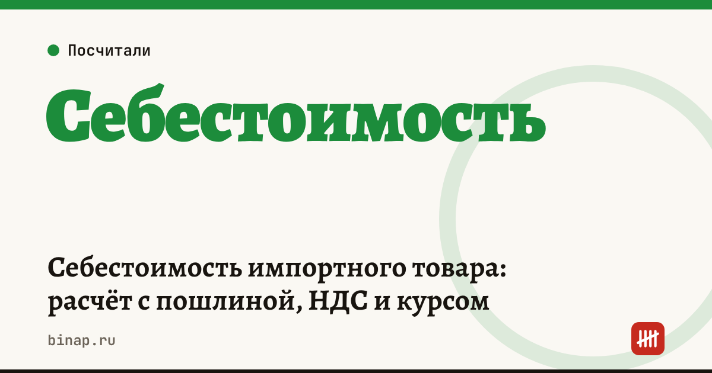

Себестоимость импортного товара: расчёт с пошлиной, НДС и курсом

Себестоимость импортного товара — это не цена у поставщика, а всё, что вы заплатите до того, как товар окажется на складе: перевод денег, доставка, пошлина, НДС при ввозе, услуги брокера и сертификация. Посчитайте её до заказа — и при двух курсах валюты, чтобы видеть запас прочности.
Коротко
- Таможенная стоимость в упрощённом виде — цена товара в рублях плюс доставка до места ввоза.
- Пошлина считается от таможенной стоимости по ставке для кода ТН ВЭД.
- НДС при ввозе — от таможенной стоимости плюс пошлина; основная ставка с 2026 года — 22%, для части товаров — 10%.
- Если НДС при ввозе вы не можете принять к вычету (например, на УСН без НДС), он увеличивает себестоимость.
- Курс меняется между заказом и оплатой — считайте партию с запасом 5–10%.
Сроки, изменения и разборы для ИП и самозанятых — каждое утро в Telegram и MAX. Подпишитесь, чтобы не пропустить.
Формула
Себестоимость партии = товар по курсу + комиссия за перевод + доставка до границы + пошлина + НДС при ввозе + сборы и брокер + доставка до склада + сертификация.
Себестоимость единицы = себестоимость партии ÷ количество.
Пример
Расчёт редакции, цифры условные. Партия 1 000 штук, цена у поставщика — 10 000 юаней, курс — 12 ₽.
| Статья | Сумма |
|---|---|
| Товар: 10 000 × 12 ₽ | 120 000 ₽ |
| Комиссия за перевод 2% | 2 400 ₽ |
| Доставка до границы | 60 000 ₽ |
| Пошлина 10% от (120 000 + 60 000) | 18 000 ₽ |
| НДС 22% от (180 000 + 18 000) | 43 560 ₽ |
| Сборы и брокер | 25 000 ₽ |
| Доставка до склада | 30 000 ₽ |
| Сертификация и маркировка | 20 000 ₽ |
| Итого | 318 960 ₽ |
Себестоимость единицы: с НДС — около 319 ₽, без НДС (если принимаете его к вычету) — около 275 ₽. Цена товара у поставщика — только 38% полной себестоимости.
При курсе на 10% выше (13,2 ₽) товар подорожает на 12 000 ₽, а вместе с комиссией, пошлиной и НДС себестоимость партии вырастет примерно на 16 300 ₽. Посчитайте свою партию в калькуляторе себестоимости импорта.
Банк или платёжный агент для оплаты поставщику: ссылка
Что чаще всего забывают
- Комиссию за перевод и разницу курса банка — курс банка обычно хуже курса ЦБ.
- НДС при ввозе на УСН — его нельзя вычесть, он сразу увеличивает себестоимость.
- Сертификацию и маркировку — особенно для первой партии.
- Брак и пересорт — заложите долю потерь.
Что сделать
- Узнайте код ТН ВЭД и ставку пошлины до заказа — у брокера или декларанта.
- Посчитайте партию при текущем курсе и при курсе на 10% выше.
- Сравните себестоимость единицы с ценой продажи — прибыль с единицы должна покрывать риск курса.
Как пройти валютный контроль до первого платежа — валютный контроль для ИП. Как зафиксировать курс — валютные форварды. Все шаги — в разделе «Импортёрам».
Частые вопросы
Входит ли доставка в таможенную стоимость? Расходы на доставку до места ввоза включаются в таможенную стоимость. Доставка от границы до склада — нет, если выделена в документах отдельно.
Почему НДС считают от суммы с пошлиной? Базой для НДС при ввозе служит таможенная стоимость плюс пошлина (и акциз, если он есть).
Где узнать ставку пошлины? По коду товара в ТН ВЭД ЕАЭС. Код определяет декларант или брокер; ошибка в коде — частая причина доначислений.